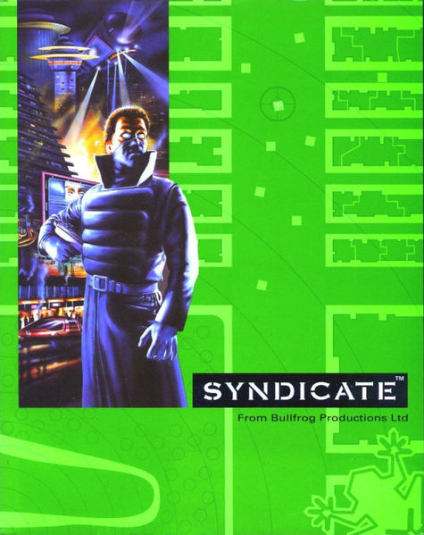
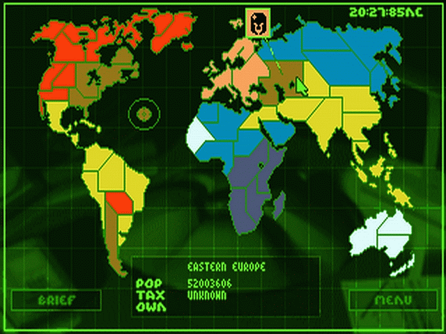
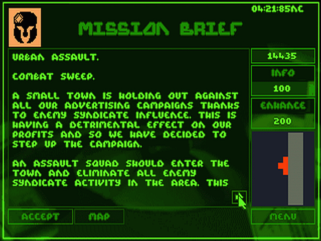
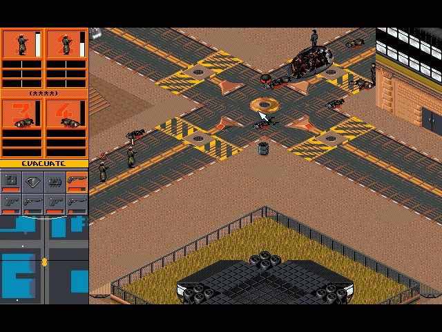
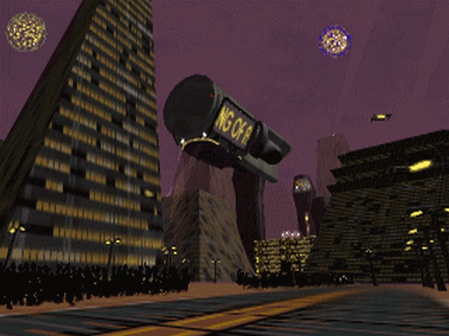
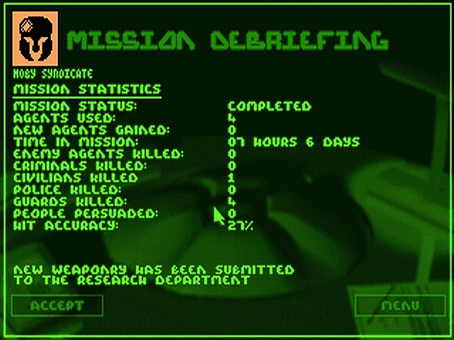

Game review by : Vesper
Year : 1993
Developer : Bullfrog Productions
Degree of Cyberpunk visuals : Very High
Correlation to Cyberpunk themes : Very High
Rating : 9/10

Introduction: this review is not meant to convince you that Syndicate is a great game. It's a release from the far past (13 years in computer gaming is an eternity), and should be treated as such when comparing to the games of today. Bullfrog managed to produce amazingly innovative titles (how about Dungeon Keeper, Magic Carpet and Populous?) and its shot at cyberpunk was nothing short of their other best-selling releases. Contemporary gamers may sneer at the antediluvian graphics and a soundtrack that's easily put to shame by any polyphonic mobile phone ringtone, but a hardcore cyberpunk (or someone with a long history in gaming, dating back to the 8-bit machines and the peak of Amiga's fame) will easily recognize a gem.
The Story: The 22nd century. Dark and bleak. Organized crime turned into business and politics as nation-states crumbled, one by one. You were not willing to become one of the helpless citizens sealed in stalag-like compounds, slaving for a "syndicate", as the new powers were called. You started a syndicate of your own. Amassing illegaly raised funds, black-market specialists and military-class technology, you decided to get a piece of the cake that Earth became.

Such lust for power needs to be fed appropriately. You knew you couldn't take on the whole world alone. You needed help. And there it came, with the astounding Leonardo device, turning common men and women into hi-tech combat machines that you control. Storing those who were not needed in deep-freeze, you assemble a lethal quartet, equip it with implants, weapons and non-lethal combat tech - and then you send them straight into enemy territory to perform a mission that will grant you what you crave most. Control.
But beware - other syndicates are more than willing to come in your way and bring you down to your knees. You'll need all the money you can grab and all the tech you can either steal or develop in order to best them. Are you hard enough to crack the opposition?
The Game: do not expect a complex and intricate plot to explore. This ain't Blade Runner, choomba. You'll need guns, lots of guns, and an attitude to match the armament. You'll also need a working brain - nobody is going to fear an organization ran by a dimwit. Yes, this is another issue which makes games different from reality.
You start with a company name, a company logo (you can choose the design and the colour) and a single territory in Europe. Each territory is connected with a different mission. Once you acquire a territory, you can set its tax level to get funds. Be reasonable, you don't want people to rebel against you - you'll have to reclaim an area if there's an unrest. Think "Godfather".
Syndicate puts a lot of emphasis on research. The funds you obtain should be promptly invested in the R&D department, where you are going to receive new guns (from uzis to lasers and miniguns), extra equipment (personal shields and so on) and, last but not least, new implants. You'll need those to make your agents faster, more intelligent and resistant to enemy fire. The implants come in three versions, and you should focus on developing the more advanced ones as soon as possible - expect the difficulty of the missions to increase rapidly.

Once you choose a mission, you can equip your team, buy some extra info about the assignment (or an enhanced map which doesn't really do you any good - you shouldn't expect a lot from sloppy intelligence behind enemy lines) and send them to their de... success, of course. Seriously, you might lose an agent once in a while, but do not panic - you can always recruit new people.
The game offers an array of missions. You get to assassinate VIPs, rescue captured personnel, "persuade" civilians and scientists join your company "willingly" (no bloodshedding necessary - at least not from the ones you'll be trying to convince to work for you), demolish buildings, or simply kill all opposing agents. Sometimes, using guns is not really necessary - sometimes it's not even advised, especially when you have to sneak into a heavily guarded compound. Thanks to an ingenious device - the persuadertron - you can force others to join your agents as living shields, extra firepower or simply to snatch them away as new personnel (this way you can fill your cryo tanks at the HQ with new agents). The persuadertron is necessary in many missions, and it is extremely useful in almost all of them.
As you can see, the mission takes place in a isometric environment, which can sometimes obscure your field of view. You get to infiltrate cities full of civilians, policemen, enemy agents and vehicles (including APCs). The architecture is sort of "1984 meets Equilibrium". You can feel the uneasiness of the surroundings, and the colours add a lot to the general feeling of the game.

Your team (which does not have to include 4 agents, by the way - if you feel you can pull off an assasination using just one guy - go for it!) can be controlled using a very simple and efficient interface. You also get a scanmap with friend/foe IDs and signals telling you where to head and what to do - as long as one of your agents carries a scanner module. You can order your agents to move independently (by clicking an agent in the team window and giving him/her orders) or as a group (the button between the two rows of agents allows you to group-select them). You can also manipulate the Intelligence, Perception and Adrenaline levels of an agent, allowing him/her to act when necessary - this is pretty handy when you want to set up a defensive perimeter or enter a building (your surveillance camera cannot penetrate walls).
If you want to pick something up, point the cursor at the object and it should change into a manipulator - click and it's going to be picked up. Another hint you might find useful - sometimes you'll need to pass a gate - vehicles are best for that. To board one, click on it while ordering agent(s). To unboard, click on it again. One final piece of advice - policemen won't fire at unarmed people. So, if you don't click on a weapon in your inventory, your agents will be considered civilians. Enemy agents, on the other hand, will easily recognize them regardless of their stance - avoid them, persuade them or dispose of them in some violent way. Remember, after a mission you'll have to leave the area, so be prepared to escape when necessary.
The environment is well scripted (although you might find driving around a bit confusing at first - it takes some practice, just like in real life) - civilians will run if they notice anybody wielding a weapon, police officers will warn you and shoot if you don't obey, enemy agents will engage you when you least expect it, and all will generally burn pretty nicely once you put your flamethrowers to work (yes, one of the massive attractions of that game in 1993 was the possibility of incincerating whole crowds). Have I already mentioned the fitting architecture? Some of my "wet cyberpunk dreams" were based on Syndicate's levels.
If you happen to fail a mission (failure is unacceptable!), you can repeat it with no penalties (well, if you lose agents and/or pieces of equipment, don't expect to find them be back at your home base). Of course, failing a mission doesn't have to mean losing all the agents - it's enough the person you were to extract dies.
Once you conquer the last remaining territories, you win - it's as "simple" as that. At least until you choose to play the extension pack entitled Syndicate: American Revolt or the sequel Syndicate Wars.

Why you want to play Syndicate: cause it's simply one of the genre-defining computer games. Back in 1993, Syndicate was all the rage when it came to showing others what cyberpunk was. Sure, there is no c-space and hackers, but does running a corporation/crime syndicate by means of controlling a bunch of highly lethal cyborgs roaming dark futuristic cities, killing and kidnapping people sound non-cyberpunk to you? The intro alone was enough to hook up many a gamer with the concept of cyberpunk.
It's also one of the best pieces of computer gaming history, and if you are into stylish antiques, you should check it out.

Availability: you can find it on GOG. You need the DOSBox utility to run it under Windows (or an appropriate emulator, if you're running any non-PC version). Pick it up, get it running and prove you're tough enough to rule the future!
PS : an open-source version of the game is in the works.